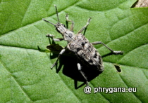

| Phrygana: la Nature en Crète principalement, mais aussi d'ailleurs ... |
|
 |
|
|
| Rhagium inquisitor | Carex remota | Carex sylvatica |
| Espèces: 1537--- Faune: 591 -- Flora: 917 -- Galles (Bacteria): 2 -- Champignons: 26 -- Lichens: 1 | |||||
| Nouveautés | |||||
| Fauna: | Drepanosiphum platanoidis | Fauna: | Sturnus vulgaris | Flora: | Cyperus javanicus |
| Flora: |
Allamanda cathartica
| Flora: |
Salix x sepulcralis |
Floraa: |
Coronilla varia |
|
| Fauna: | Phyllocnistis xenia | Flora: | Veronica montana | Flora: | Ribes rubrum |
| 0! mai 2025 |